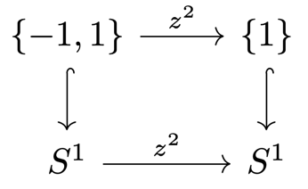
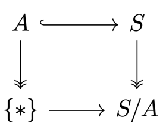

3 Connectedness
The notion of connectedness
Definition 3.1
Connected
A topological space \(X\) is connected if \(\emptyset\) and \(X\) are the only subsets of \(X\) that are both open and closed.
Proposition 3.2
Connectivity vs nontrivial sums
Proof
Assume \(X \cong X_0 + X_1\) with \(X_0, X_1 \neq \emptyset\).
\(\begin{align*} & \implies X_i \in \O_{X_i} \\ & \implies X_i \in \O_X \end{align*}\)
Further, we have that \(X\setminus X_1 = X_0 \in \O_X\), so \(X_1\) is closed in \(X\). Similarly, \(X_0\) is closed in \(X\). Thus, \(X\) is not connected.
Assume \(X\) is not connected.
\(\begin{align*} & \implies \exists\ X_0\in\O\setminus\{\emptyset, X\} : X_0 \text{ is closed} \\ & \implies X_1 := X\setminus X_0 \text{ is open and closed} \\ & \implies X \cong X_0 + X_1 \end{align*}\)
Theorem 3.3
Constant maps to discrete spaces
Proof
Assume \(X\) is connected and \(f: X \to Y\) is continuous. Further, let \(y \in Y\).
\(\begin{align*} & \implies \{y\} \text{ is open and closed} \\ & \implies f^{-1}(y) \text{ is open and closed} \\ & \implies f^{-1}(y) \in \{\emptyset, X\} \\ & \implies f \text{ is constant} \end{align*}\)
Assume \(X\) is connected and \(X \cong X_0 + X_1\) with \(X_0, X_1 \neq \emptyset\). Define the function \(f\) as
Then, \(f\) is continuous but not constant \(\contradiction\).
Proposition 3.4
Unions of overlapping connected subsets
Let \((A_i)_{i\in I}\) be a cover of \(X\) of connected subsets.
Proof
Let \(f : X \to \{0, 1\}\) be continuous.
\(\begin{align*} \implieshref{#t33}{T.3.3} & f|_{A_i} \text{ is constant } \forall i\in I \\ \end{align*}\)
\(\begin{align*} & A_i\cap A_j \neq \emptyset \\ & \implies f \text{ is constant on } X \\ & \implieshref{#t33}{T.3.3} X \text{ is connected} \end{align*}\)
Intervals
Proposition 3.5
Intervals are the connected subsets of ℝ
Let \(A \subseteq \R\) be a subset.
Proof
Assume \(A\) is not an interval.
\(\begin{align*} & \implies \exists\, x < y < z : x, z \in A, y \notin A \\ & \implies A = \{a \in A \mid a < y\} \cup \{a \in A \mid a > y\} \text{ is a union of nonempty sets} \\ & \implies A \text{ is not connected} \end{align*}\)
Let \(A\) be an interval and assume it can be composed as a sum \(A = U + V\) of nonempty sets with \(u < v\) for all \(u \in U, v \in V\). Fruther, let \(s := \sup(U\cap[u, v])\).
\(\begin{align*} & \implies v > s \in U \cap [u, v] \\ & U \cap (u, v) \text{ is open} \\ & \implies \exists\,\varepsilon > 0 : B_\varepsilon(s) \subseteq U \cap (u, v) \\ & \implies s + \varepsilon \in U \cap [u, v] \quad \contradiction \end{align*}\)
Remark 3.6
Connected sets have connected images
-
Let \(f : X \to Y\) be a continuous map from a connected space \(X\). Then, \(\Im f \subseteq Y\) is connected.
-
Conversely, if \(\Im f = A + B\), then \(X = f^{-1}(A) + f^{-1}(B)\).
Corollary 3.7
Intermediate value theorem
\(\begin{align*} \text{Let } & X \text{ be connected} \\ & f : X \to \R \text{ continuous} \end{align*}\)
Connectivity and closure
Theorem 3.8
Connected sets have connected closures
Let \(A \subseteq X\) be connected. Then, any set \(B\) satisfying \(A \subseteq B \subseteq \overline{A}\) is connected.
Proof
Assume \(B = B_0 + B_1\) is not connected.
\(\begin{align*} & \implies B_0, B_1 \in \O_B \\ & \implies \exists\, U_0, U_1 \in \O_X : B_i = U_i \cap B \\ & \implies A = (U_0 \cap A) + (U_1 \cap A) \end{align*}\)
Assume without loss of generality that \(U_0 \cap A = \emptyset\).
\(\begin{align*} & \implies X \setminus U_0 \supseteq A \text{ and is closed} \\ & \implies B \subseteq \overline{A} \subseteq X \setminus U_0 \\ & \implies B_0 = U_0 \cap B = \emptyset \quad \contradiction \end{align*}\)
Connected components
Definition 3.9
Connected component
For \(x \in X\), the union of all connected subsets \(A \subseteq X\) with \(x \in A\) is called the connected component of \(x\).
Remark 3.10
Theorem 3.11
Connectedness of products
Let \(X, Y\) be nonempty topological spaces.
Proof
The projections \(\pr_X, \pr_Y\) are continuous surjections. Thus, by R.3.6, \(X, Y\) are connected.
Let \((x,y), (\hat x, \hat y) \in X \times Y\).
\(\begin{align*} & \implies \{x\} \times Y \cong Y, X \times \{\tilde y\} \cong X \text{ are connected} \\ & (x, \tilde y) \in \{x\} \times Y \cap X \times \{\tilde y\} \\ &\implieshref{#p34}{P.3.4} \{x\} \times Y \cup X \times \{\tilde y\} \text{ is connected, and contains } (x, y), (\hat x, \hat y) \end{align*}\)
The same is true for the connected component of this subset, which must be all of \(X \times Y\).
Definition 3.12
Totally disconnected
A topological space \(X\) s.t. \(\{x\}_{x\in X}\) are connected components is called totally disconnected.
Example 3.13
Any discrete space is totally disconnected.
Proof
Let \(x \in X\) and \(U \subseteq X : x \in U\). Then, \(U = \{x\} \cup (U \setminus \{x\})\) is a union of two open and closed sets. Thus, \(U\) is connected iff \(U = \{x\}\).
The Cantor set (which is not discrete) is totally disconnected.
\(\Q \subseteq \R\) is totally disconnected.
Proof
Let \(A \subseteq \Q\) be a connected subset.
\(\begin{align*} \implieshref{#r36}{R.3.6} & A \text{ is a connected subset of } \R \\ \implieshref{#p35}{P.3.5} & A \text{ is an interval} \\ \implies & A \text{ is a singleton} \end{align*}\)
Lemma 3.14
Finitely many components form a sum
Let \(X\) be a topological space with finitely many connected components.
\(\implies\) They are open, and \(X\) is a sum of these components.
Proof
Let \(\{C_i\}_{i=1}^n\) be the connected components of \(X\). By R.3.10, these are closed. Each component is the complement of the union of the others, so we get
which is a finite intersection of open sets, so \(C_j\) is open.
Quasi-components
Definition 3.15
Quasi-component
The quasi-component of \(x \in X\) consists of all points \(y \in X\) s.t. \(X\) is no sum \(X = A + B\) with \(x \in A, y \in B\).
Remark
Equivalently, it is the set of all \(y\in X\) that lies in the same part as \(x\) for all decompositions \(X = A + B\).
Example 3.16
Quasi-components and components are not the same:
\(\begin{align*} \text{Let } X = \left(\left\{\frac{1}{n}\right\} \times [0, 1]\right) \cup \Big\{(0, 0), (0, 1)\Big\} \subseteq \R^2 \end{align*}\)
- \(\Big\{(0, 0), (0, 1)\Big\}\) is a quasi-component
- \(\{(0, 0)\}, \{(0, 1)\}\) are connected components.
Theorem 3.17
Quasi-components are coarser than components
\(\begin{align*} \text{Let } & x \in X \\ & C \subseteq X \text{ be the connected component of } x \\ & Q \subseteq X \text{ be the quasi-component of } x \end{align*}\)
Proof
Let \(X = A + B : x \in A\).
\(\begin{align*} & \implies C = C \cap A + C \cap B \\ & \implies C \cap B = \emptyset \\ & \implies C \subseteq A \\ & Q = \bigcap_{X = A+B : x \in A} A \\ & \implies C \subseteq Q \end{align*}\)
Paths and path-connectedness
Definition 3.18
Path-connected, path component
A path in a space \(X\) is a continuous map \(f : [a, b] \subseteq \R \to X\).
\(X\) is path-connected if
We write \(\gamma : x \leadsto y\).
The path component of \(x \in X\) is the set of all points \(y \in X\) s.t. \(\exists\, \gamma : x \leadsto y\).
Theorem 3.19
Path-connected implies connected
Any path-connected space is connected.
Proof
Assume \(X = A + B : x \in A, y \in B\).
\(\begin{align*} & \implies \exists\, \gamma : [0, 1] \to X, x \leadsto y \\ & [0, 1] = \gamma^{-1}(X) = \gamma^{-1}(A) \sqcup \gamma^{-1}(B) \\ & \gamma \text{ is continuous} \\ & \implies \gamma^{-1}(A), \gamma^{-1}(B) \neq \emptyset \\ & \implies [0, 1] = \gamma^{-1}(A) + \gamma^{-1}(B) \quad\contradiction \end{align*}\)
Example 3.20
\(\begin{align*} A = \bigcup_{n\in \N} \left(\left\{\frac{1}{n}\right\} \times (0, 1]\right) \cup \Big([0, 1] \times \{0\}\Big) \end{align*}\) is paht-connected.
\(C = A \cup \Big(\{0\} \times [0, 1]\Big) = \overline A\) (comb space) is path-connected.
\(D = A \cup \{(0, 1)\} = C \setminus (\{0\} \times (0, 1))\) (deleted comb space) is connected by T.3.8, as \(A \subseteq D \subseteq \overline A = C\).
However, \(D\) is not path-connected:
Claim: Any path \(\bm{\gamma : [0, 1] \to D}\) with \(\bm{\gamma(0) = p = (0, 1)}\) must be constant.
\(\begin{align*} \text{Let } V := \bigcup_{n\in\N} \left(\left\{\frac{1}{n}\right\} \times (0, 1]\right) \cup \{p\} \in \Neigh_p \end{align*}\) be open. Further, choose any \(t\in \gamma^{-1}\{p\}\).
\(\implies \exists\, U \subseteq [0, 1] \text{ open neighbourhood of } t : \gamma(U) \subseteq V\)
We can choose \(U\) connected, as open intervals forma basis for \(\R\).
Claim: \(\forall\, q\in V\setminus \{p\} : q \notin \gamma(U)\)
Let \(q \in V\setminus \{p\}\).
\(\implies \exists\, n, y : q = \left(\frac{1}{n}, y\right)\)
Let \(r \in \left(\frac{1}{n+1}, \frac{1}{n}\right)\)
\(\begin{align*} & \text{Let } q \in V\setminus \{p\} \\ & \implies \exists\, n, y : q = \left(\frac{1}{n}, y\right) \\ & \text{Let } r \in \left(\frac{1}{n+1}, \frac{1}{n}\right) \\ & \implies \gamma(U) \subseteq V = V_p + V_q \subseteq \Big((-\infty, r) \times \R\Big) + \Big((r, \infty) \times \R\Big) \\ & \gamma(U) \text{ is connected} \\ & \implies \gamma(U) \subseteq V_p \\ & \implies q \notin \gamma(U) \end{align*}\)
Thus, \(\gamma(U) = \{p\}\), so \(\gamma\) is constant on \(U\). Any \(t\in \gamma^{-1}\{p\}\) has a neighbourhood, so \(\gamma^{-1}\{p\}\) is open and closed. Thus, \(\gamma^{-1}\{p\} = [0, 1]\).
Local notions of connectedness
Definition 3.21
Locally (path-)connected
\(X\) is locally (path-)connected if
Remark 3.22
Equivalently:
- For all \(x \in X\), the (path-)connected open neighbourhoods of \(x\) form a neighbourhood basis of \(x\).
- The (path-)connected open sets form a basis for \(X\).
Example 3.23
The deleted comb space \(D\) is not locally connected:
In E.3.20, we constructed a decomposition \(V = V_p + V_q\).
\(\begin{align*} \text{Let } & U \supseteq W \in \Neigh_x \\ & q \in W \setminus \{p\} \end{align*}\)
Then, \(W = W \cap V_p + W \cap V_q\) is a decomposition of \(W\) into open sets, so \(W\) is not connected.
Remark 3.24
Every CW-complex is locally path-connected.
Theorem 3.24
Locally connected spaces have open components
Any (path-)component of a locally (path-)connected space is open.
Proof
\(\begin{align*} \text{Let } & x \in X \\ & K \subseteq X \text{ be the (path-)component of } x \end{align*}\)
We want to show that \(K\) is open:
\(\begin{align*} \text{Let } & y \in K \\ & V \in \Neigh_y \text{ be open and (path-)connected} \end{align*}\)
\(\begin{align*} & \implies V \cup K \text{ is (path-)connected} \\ & \implies V \subseteq K \\ & \implies K \in \Neigh_y \end{align*}\)
Theorem 3.26
From local to global path-connectedness
Let \(X\) be locally path-connected.
- \(\forall\, x \in X :\) the connected component of \(x\) is its path component.
- \(X \text{ is connected } \iff X \text{ is path-connected.}\)
Proof
\(\begin{align*} \text{Let } & x \in X \\ & K \subseteq X \text{ be the connected component of } x & P \subseteq X \text{ be the path component of } x \end{align*}\)
Then, we trivially have that \(P \subseteq K\).
Let \(Q = K \setminus P\) be a locally path-connected subspace.
\(\begin{align*} \implies & Q \text{ is a union of its path components} \\ \implieshref{#t325}{T.3.25} Q, P \text{ are open and closed} \\ \end{align*}\)
\(\begin{align*} & K = P + Q \\ & \implies Q = \emptyset \\ & \implies K = P \end{align*}\)
Functoriality of path-components
Theorem 3.27
Functoriality of path-components
A continuous map \(f : X \to Y\) induces a well-defined map
between the (path-)components of \(X\) and \(Y\).
If \(g : Y \to Z\) is another continuous map, then
This follows from the next lemma.
- Denote by \(\pi_0(X)\) the set of path-components of \(X\).
- For a continuous map \(f : X \to Y\), denote the induced map on path-components by \(\pi_0(f) : \pi_0(X) \to \pi_0(Y)\).
Lemma 3.28
Functoriality of equivalence classes
\(\begin{align*} \text{Let } & \sim_X, \sim_Y, \sim_Z \text{ be equivalence relations on } X, Y, Z \\ & \begin{rcases} f : X \to Y \\ g : Y \to Z \end{rcases} \text{ be set maps inducing well-defined maps } \tilde f, \tilde g \text{ on the equivalence classes} \end{align*}\)
Proof
Well-definedness of \(\tilde f\) means that \(f[x] \subseteq [f(x)] = \tilde f[x]\).
Therefore, \(g \circ f\) induces a well-defined map
Then, we have
Remark 3.29
Let \(f : X \to Y\) be a continuous map.
- \(f \text{ is surjective } \implies \pi_0(f) \text{ is surjective}\)
- \(f \text{ is injective } \centernot\implies \pi_0(f) \text{ is injective}\). Consider the inclusion \(\{0, 1\} \hookrightarrow [0, 1]\).
Lemma 3.30
Path-components of products
Let \(X, Y\) be topological spaces.
Proof
The induced map \([(x, y)] \mapsto ([x], [y])\) is surjective as \((x, y) \mapsto ([x], [y])\) is surjective.
\(\begin{align*} & [x_1] = [x_2], [y_1] = [y_2] \\ & \implies \exists\, \gamma : x_1 \leadsto x_2, \rho : y_1 \leadsto y_2 \\ & \implies (\gamma, \rho) : (x_1, y_1) \leadsto (x_2, y_2) \text{ is a path} \\ & \implies [(x_1, y_1)] = [(x_2, y_2)] \end{align*}\)
Lemma 3.31
Path-components of sums
Let \(X, Y\) be topological spaces.
Proof
Every equivalence class in \(\pi_0(X + Y)\) has
- a representative \(x \in X\) or \(y \in Y\), and thus
- a preimage in the disjoint union \(\pi_0(X) + \pi_0(Y)\).
Every path in \(X + Y\) lies either in \(X\) or \(Y\).
Remark 3.32
\(\bm{\pi_0}\) does not preserve pullbacks or pushouts.
The pullback diagram

is not sent to a pullback diagram under \(\pi_0\).
\(\begin{align*} \text{Let } & A = \{0\} \times [0, 1] \\ & S = A \cup \{(t, \sin\frac{1}{t}) \mid t \in (0, 1]\} \text{ (topologist's sine curve)} \end{align*}\)
\(\implies \begin{cases} S \text{ is not path-connected} \\ S/A \text{ is path-connected} \end{cases}\)
The pushout diagram

is not sent to a pushout diagram under \(\pi_0\).